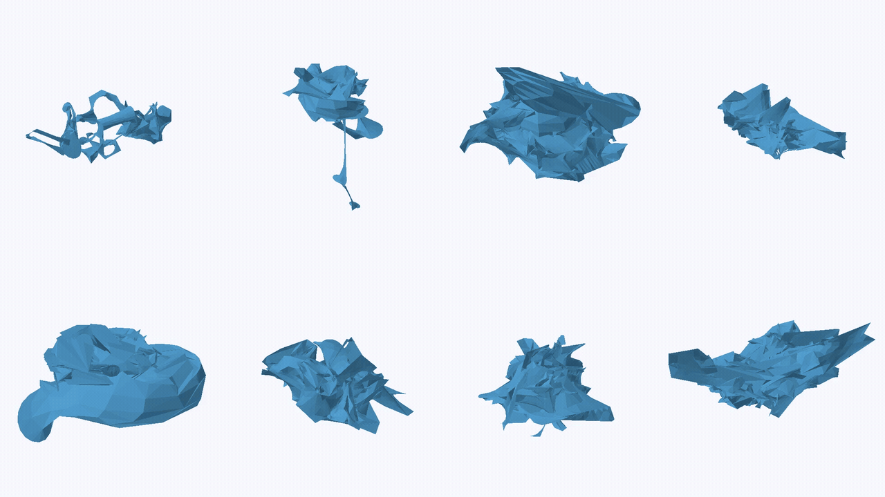

Joint generation of geometry and topology for structured 3D shapes.

Reconstruction across eight CAD geometries.
1B
Model parameters
+6 pp
Valid B-Rep rate
−8.5%
MMD–CD
Metric improvements relative to a hierarchical cascade baseline.
The method
Geometry and topology, jointly modeled.
We represent vertices, edges and faces as entity tokens in a shared Diffusion Transformer. Geometry and connectivity evolve together, with soft topology guiding attention throughout denoising.
One conditioning interfaceUnconditional generationTopology restorationCompletionLocal infilling
03 / Reconstruction
Consistent topology. Shared boundaries.
Geometry is decoded from native parameters or VAE latents. A MILP projects predicted relations under loop, orientation, manifold and connectivity constraints.
Shared endpoints and one polyline per edge give neighboring faces the same boundary indices, connecting the reconstructed mesh.